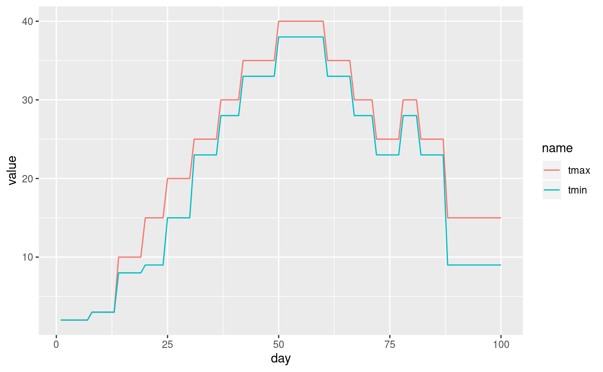
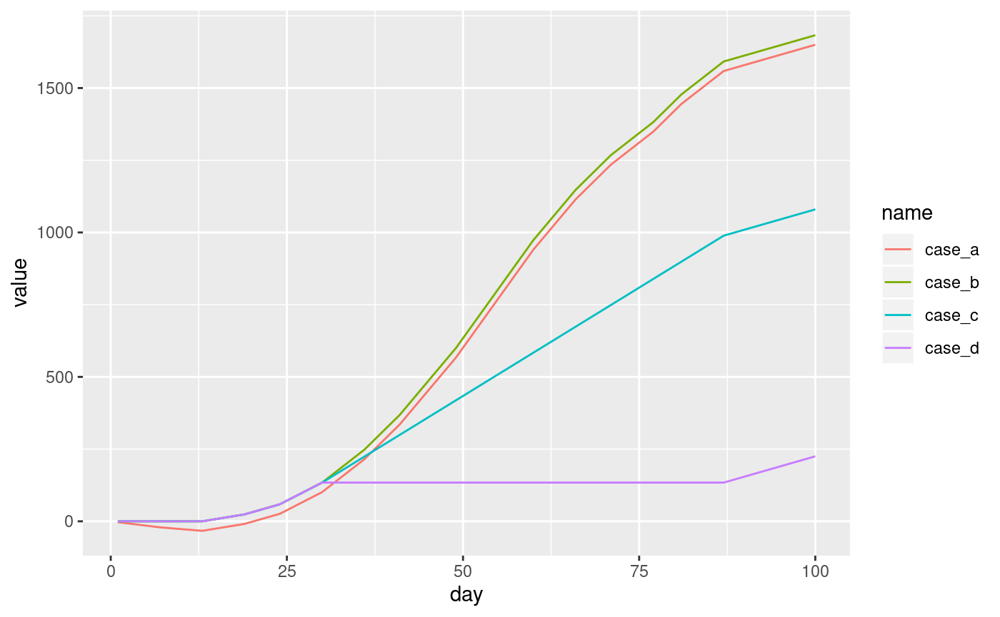

gdd.RmdLet’s start with attaching a set of package used in this vignette:
Next, we will use the gdd_data dataset - a data frame with three columns:
day - this could be a date in real datatmax - this value would represent a maximum temperature in real datatmin - this value would represent a minimum temperature in real datadata("gdd_data", package = "pollen")
head(gdd_data)
#> day tmax tmin
#> 1 1 2 2
#> 2 2 2 2
#> 3 3 2 2
#> 4 4 2 2
#> 5 5 2 2
#> 6 6 2 2We can vizualize the gdd_data dataset using the ggplot2 package:
df_plot1 <- pivot_longer(gdd_data, tmax:tmin)
p1 <- ggplot(df_plot1) +
geom_line(aes(day, value, color = name))
p1
The pollen package allows for calculations of growing degree days (GDD) using the gdd() function. This function accepts up to five arguments:
tmax - daily maximum temperaturetmin - daily minimum temperaturetbase - base temperaturetbase_max - maximum base temperaturecase - type of the GDD calculations. Either “A”, “B”, “C”, or “D”. The default is “C”.The last argument is inspired by the article by Baskerville and Emin (1969) (see Figure 1 in the mentioned paper).
"A" - this is the simplest case. The heat units are calculated based on the difference between the mean daily temperature and the threshold (tbase)"B" - in this case when the value of tmin is lower than tbase, then it is replaced by tbase
"C" - same as case "B" and when the value of tmax is larger than tbase_max, then it is replaced by tbase_max
"D"- same as case "B" and when the value of tmax is larger than tbase_max, then no heat units are addedgdd_data$case_a <- gdd(tmax = gdd_data$tmax, tmin = gdd_data$tmin,
tbase = 5, case = "A")
gdd_data$case_b <- gdd(tmax = gdd_data$tmax, tmin = gdd_data$tmin,
tbase = 5, case = "B")
gdd_data$case_c <- gdd(tmax = gdd_data$tmax, tmin = gdd_data$tmin,
tbase = 5, tbase_max = 20, case = "C")
gdd_data$case_d <- gdd(tmax = gdd_data$tmax, tmin = gdd_data$tmin,
tbase = 5, tbase_max = 20, case = "D")
head(gdd_data)
#> day tmax tmin case_a case_b case_c case_d
#> 1 1 2 2 -3 0 0 0
#> 2 2 2 2 -6 0 0 0
#> 3 3 2 2 -9 0 0 0
#> 4 4 2 2 -12 0 0 0
#> 5 5 2 2 -15 0 0 0
#> 6 6 2 2 -18 0 0 0Finally, let’s compare these four cases:
df_plot2 <- pivot_longer(gdd_data, case_a:case_d)
p2 <- ggplot(df_plot2) +
geom_line(aes(day, value, color = name))
p2
Baskerville, G., & Emin, P. (1969). Rapid Estimation of Heat Accumulation from Maximum and Minimum Temperatures. Ecology, 50(3), 514-517. doi:10.2307/1933912